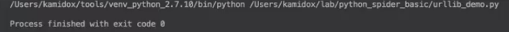
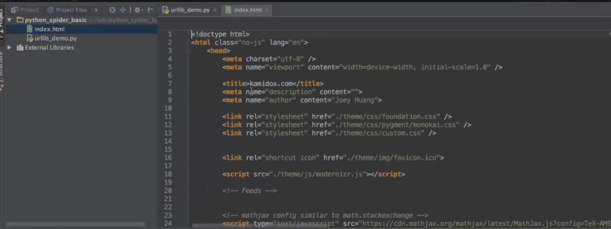
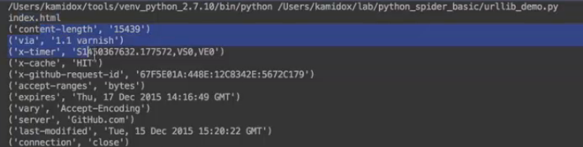
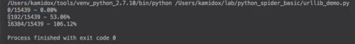

urllib.urlretrieve:（它提供了一个更便捷的功能，就是直接把远程的文件，下载到本地）
1）url：远程地址
2）filename：要保存到本地的文件
3）reporthook：下载状态报告
4）data：POST的application/x-www-form-urlencoded格式的数据
5）返回（filename，HTTPMassage）
示例：
# -*- coding: utf-8 -*-
import urllib
def print_list(list):
for i in list:
print(i)
def retrieve():
urllib.urlretrieve('http://blog.kamidox.com', 'index.html')
if __name__ == '__main__':
retrieve()
运行结果

可以看到，这里马上出现了一个html的文件，打开后如下

我们来看一下这个http对象
# -*- coding: utf-8 -*-
import urllib
def print_list(list):
for i in list:
print(i)
def retrieve():
fname,msg = urllib.urlretrieve('http://blog.kamidox.com', 'index.html')
print(fname)
print_list(msg.items())
if __name__ == '__main__':
retrieve()
运行结果

reporthook：看怎么来监控这个当前下载的进度
1）参数1：当前传输的块数
2）参数2：块大小
3）参数3：数据总大小
4）需要注意：content-length不是必须的
实际上参数1，参数2相乘就是当前下载多少个字节，和参数3一除就知道这个百分比
示例：
# -*- coding: utf-8 -*-
import urllib
def print_list(list):
for i in list:
print(i)
def progress(blk, blk_size, total_size): //监控这个大小的
print('%d/%d - %.02f%%' % (blk * blk_size, total_size, (float)(blk * blk_size) * 100 / total_size)) //打印下载进度，第一个是当前的大小，第二个是总大小，第三个是百分比
def retrieve():
fname,msg = urllib.urlretrieve('http://blog.kamidox.com','index.html',reporthook=progress)
//把这个参数传进来
print(fname)
print_list(msg.items())
if __name__ == '__main__':
retrieve()
运行结果，可以看到整个进度都打印出来了，这里面为什么会超过100%，很可能是这个total_size里面的字节数，也就是指定应答类body的大小，它实际上是不包含它http头的大小。

【本文由麦子学院独家原创，转载请注明出处并保留原文链接】